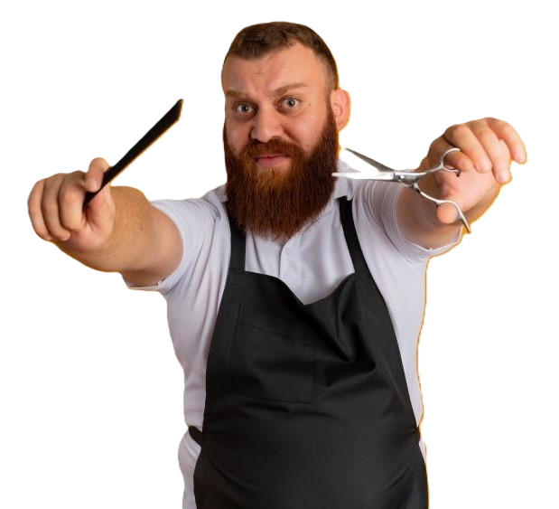

Remy, Head Chef
La Ratatouille's founder and ex Gusteau chef, Remy is the star of the famous rags-to-riches story. His favorite food is cheese.

P. Doggy, Head Groomer
The founder of Pooch Palace, P. Doggy loves working with smaller dogs. He also handles all the BABYS cuts.

Alfredo Linguini, Waiter
Once a fake chef, Linguini now has found his passion bussing tables. He and Colette also manage La Ratatouille. His favorite food is omelettes.

Emile, Taste Tester
Emile has no culinary background. Every menu item has his approval. He doesn't have a favorite food.